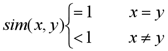

1. 实现信息隐藏的基本要求有哪些？
ALL
2. 设C是一个非空集合，一个函数 sim： C^2 →(- ∞,1) ，对x，y∈C，若满足  则sim称为C上的相似性函数
YES
3. 隐藏模型根据载体对信息提取时的贡献可分为以下两类： 第一类模型将载体图像与信号处理、攻击同等对待。 第二类模型把载体图像视为信道边信息。
YES
信息隐藏系统与通信系统的一个重要区别就在于嵌入端完全知道载体信号， 提取端可能知道载体信号，而通信系统的发送端和接收端一般是不知道具体信道的。 隐藏模型根据载体对信息提取时的贡献可分为以下两类： 第一类模型将载体图像与信号处理、攻击同等对待。 信息提取端将载体、信号处理和攻击都看作信道噪声和干扰。 例如，将载体和信号处理分别等效为高斯噪声，将载体划分为多个子带， 每个子带引入视觉门限来约束信息嵌入强度， 因为熵相同的情况下，正态分布信号的能量(方差)最小， 因此该结果可以看作不可视条件下的隐藏容量。 第二类模型把载体图像视为信道边信息。如果将载体内容仅仅视为噪声， 则忽略了这样的事实：信息嵌入端完全知道载体的内容， 如果提取端采取非盲检测(即提取算法需要原始载体)， 则提取端也知道载体内容。因此，将载体的作用视为噪声， 则忽略了很多已知条件
4. 与通信系统不同的还有，隐藏系统能够知道更多关于信道的信息，因为在信息隐藏端完全知道载体信号，充分利用这些已知信息可以提高隐藏和提取的性能。
YES
5. 通信系统和信息隐藏系统：可以将信息隐藏的载体看作通信信道，将待隐藏信息看作需要传递的信号， 而信息的嵌入和提取分别看作通信中的调制和解调过程。
YES
6. 一个系统抵御载体修改的鲁棒性越强，则系统的安全性就越低。
YES
7. 信息隐藏的安全性和鲁棒性之间存在一个平衡。 一个安全性很高的系统，其鲁棒性较差，安全性高， 说明隐藏了信息后的伪装对象与载体对象从概率分布上无法区别， 因此信息的隐藏必须利用载体的随机噪声，而随机噪声是载体的冗余信息， 通过普通的有损压缩，或者攻击者在伪装对象中加入随机噪声 ，就可以抹去隐藏信息。因此其鲁棒性是比较差的
YES
8. 除了主动攻击者对伪装对象的破坏以外，伪装对象在传递过程中也可能遭到某些非恶意的修改，如：（ ）
ALL
9. 与密码学一样，信息隐藏系统也存在攻击者，他们可以分为被动攻击者和主动攻击者。（ ）只是在监视和试图破译隐藏的秘密信息，并不对伪装对象进行任何改动。
被动攻击者
被动攻击者只是在监视和试图破译隐藏的秘密信息， 并不对伪装对象进行任何改动。 主动攻击者是要截获传递的伪装对象，修改后再发给接收方。
10. 与密码学一样，信息隐藏系统也存在攻击者，他们可以分为被动攻击者和主动攻击者。 （ ）是要截获传递的伪装对象，修改后再发给接收方。
主动攻击者
11. 当载体在W监视的信道上经过时，w对它们进行归类，判断是否有秘密消息隐藏其中。这时有以下几种情况，分别是：（ ）
ALL
12. 在含有秘密信息的载体中错误地认为没有信息隐藏，称为（ ）。
弃真错误
13. 从不含有秘密信息的载体中错误地检测出隐藏信息，称为（ ）
纳伪错误
14. 攻破一个信息隐藏系统可分为三个层次: 证明隐藏信息的存在、提取隐藏信息和破坏隐藏的信息。
YES
15. 对一个六元组Σ=〈C，M，K，C'，DK，EK〉， 其中C是所有可能载体的集合，M是所有可能秘密消息的集合， K是所有可能密钥的集合，EK：C * M * K→C'是嵌入函数， DK：C'* K→M是提取函数，若满足性质： 对所有m∈M，c∈C和k∈K，恒有：DK (EK (c，m，k)，k)=m， 则称该六元组为（ ）系统。
私钥信息隐藏
16. 隐藏信息时，应该选择一个合适的载体，使得载体对象与伪装对象之间的相似性函数达到最大值。
YES
17. 对一个五元组∑=〈C,M,C',D,E〉，其中 C是所有可能载体的集合， M是所有可能秘密消息的集合， C'是所有可能伪装对象的集合。 E：C × M→C'是嵌入函数， D:C'→M是提取函数， 若满足性质对所有 m∈M 和 c∈C ,恒有D(E(c,m))=m，则称该五元组为无密钥信息伪装系统。
YES
18. 如果一个信息隐藏系统不需要预先约定密钥，称其为无密钥信息隐藏系统
YES
19. 把需要秘密传递的信息m隐藏到载体对象c中，此时，载体对象c就变为伪装对象c' 。
YES
20. A打算秘密传递一些信息给B，A需要从一个随机消息源中随机选取一个无关紧要的消息c， 当这个消息公开传递时，不会引起怀疑，称这个消息c为（ ）
载体对象